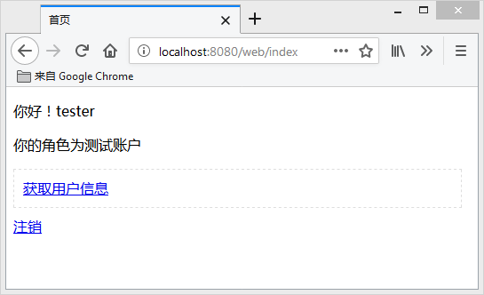
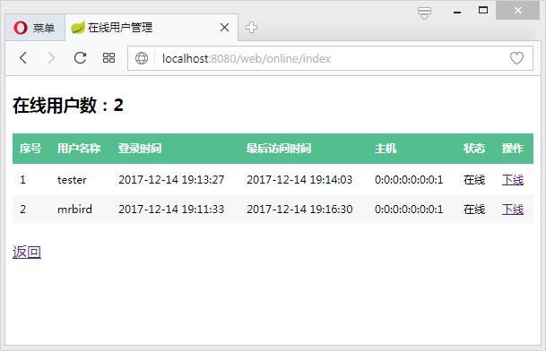
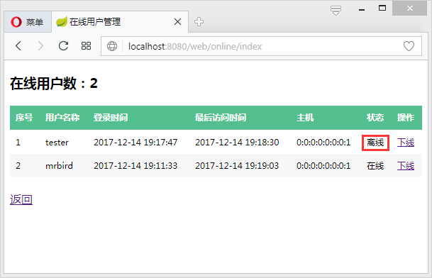
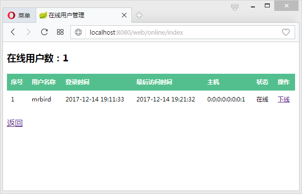

在Shiro中我们可以通过org.apache.shiro.session.mgt.eis.SessionDAO对象的getActiveSessions()方法方便的获取到当前所有有效的Session对象。通过这些Session对象，我们可以实现一些比较有趣的功能，比如查看当前系统的在线人数，查看这些在线用户的一些基本信息，强制让某个用户下线等。
为了达到这几个目标，我们在现有的Spring Boot Shiro项目基础上进行一些改造（缓存使用Ehcache）。
更改ShiroConfig
为了能够在Spring Boot中使用SessionDao，我们在ShiroConfig中配置该Bean：
如果使用的是Redis作为缓存实现，那么SessionDAO则为RedisSessionDAO：
在Shiro中，SessionDao通过org.apache.shiro.session.mgt.SessionManager进行管理，所以继续在ShiroConfig中配置SessionManager：
其中ShiroSessionListener为org.apache.shiro.session.SessionListener接口的手动实现，所以接下来定义一个该接口的实现：
其维护着一个原子类型的Integer对象，用于统计在线Session的数量。
定义完SessionManager后，还需将其注入到SecurityManager中：
UserOnline
配置完ShiroConfig后，我们可以创建一个UserOnline实体类，用于描述每个在线用户的基本信息：
Service
创建一个Service接口，包含查看所有在线用户和根据SessionId踢出用户抽象方法：
其具体实现：
通过SessionDao的getActiveSessions()方法，我们可以获取所有有效的Session，通过该Session，我们还可以获取到当前用户的Principal信息。
值得说明的是，当某个用户被踢出后（Session Time置为0），该Session并不会立刻从ActiveSessions中剔除，所以我们可以通过其timeout信息来判断该用户在线与否。
如果使用的Redis作为缓存实现，那么，forceLogout()方法需要稍作修改：
Controller
定义一个SessionContoller，用于处理Session的相关操作：
页面
我们编写一个online.html页面，用于展示所有在线用户的信息：
在index.html中加入该页面的入口：
测试
启动项目，在Opera浏览器中使用mrbird账户访问：

在FireFox浏览器中使用tester账户访问：

然后在mrbird主界面点击“在线用户管理”：

显示的信息符合我们的预期，点击tester的下线按钮，强制将其踢出：

回到tester用户的主界面，点击“查看用户信息”，会发现页面已经被重定向到login页面，因为其Session已经失效！
再次刷新mrbird的online页面，显示如下：

源码链接（Ehcache版）：https://drive.google.com/open?id=1AkCqvpVfGtdqpDktziCZrxSjPG854Arn
源码链接（Redis版）：https://drive.google.com/open?id=1GHJxnoX2rZuQXtMYpNv-TE5SHRwyqSN7